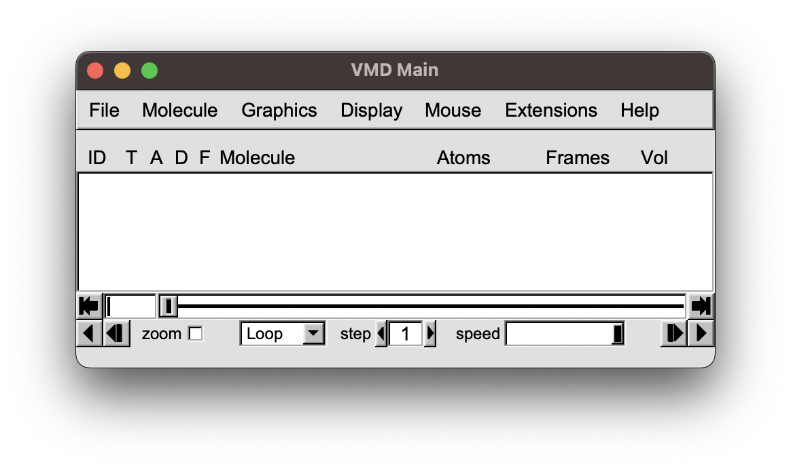
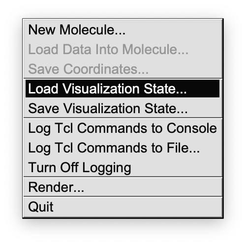

Visual Molecular Dynamics
In the following there is a short instruction for working with VMD to visualize the JEDI results.
The vmd folder generated by vmd_gen() used here is in the zip folder
There are .vmd files that can be read by VMD, pdf files of the corresponding colorbars and the .xyz file for the structure’s coordinates.
In VMD you click on 1. “File” “Load Visualization State”
 {kind=link}
{kind=link}
then select the vmd file you like, depending on the kind of redundant internal coordinate.
{kind=link}
The view can be changed with the mouse by click and drag. If you want to translate the structure press “t” and then click and drag. To rotate, press “r” and then click and drag. Zoom out with “ctrl-z” and in with “ctrl-a”. The hot-keys can be found here: https://www.ks.uiuc.edu/Research/vmd/vmd-1.7.1/ug/node30.html.
{kind=link}
Render your view by clicking on “File” “Render..”. We recommend to use “Tachyon”. Then determine the filename and add “-res 2000 2000” to the render command for a high resolution.
{kind=link}